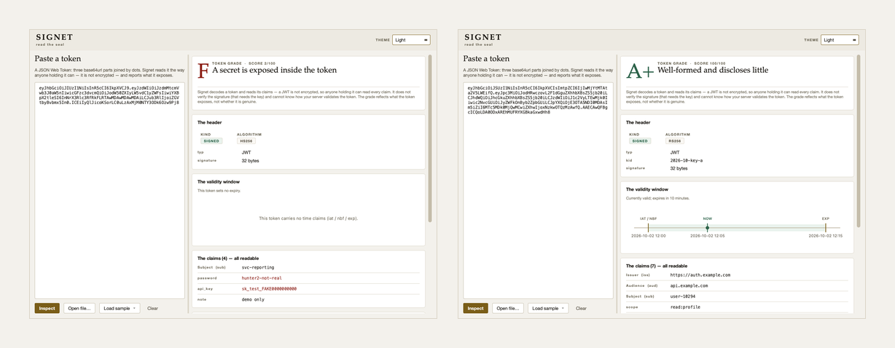

Decode a token. See what it reveals.
An offline inspector for JSON Web Tokens: it decodes a token, draws its validity window, shows every claim it carries, and grades what it exposes — without ever verifying the signature.
Why
A JSON Web Token looks like a secret — a long opaque string you paste into a header — so people treat it like one. It is not. The first two parts are plain base64url: anyone holding the token reads every claim inside it, no key required.
The third part proves who issued it, and you cannot check that without the key. Signet is honest about both halves: it shows you everything a thief would see, and refuses to pretend it has verified anything.

The reader on two of its bundled samples.
What it checks
| Signal | What trips it |
|---|---|
| Algorithm | none, a symmetric HS secret, or an unknown alg |
| Expiry | no exp, or a lifetime measured in days |
| Not-before | an nbf that has not arrived |
| Identity | no iss, or no aud to bind it |
| Exposure | a claim holding a secret, or personal data |
| Header | a kid shaped like a path-injection probe |
| Shape | a JWE, which is encrypted, or a malformed token |
The honest part
Signet never verifies the signature — that needs the key — and cannot know how your server validates a token. alg: none is always F, and a secret found in a claim caps the grade, because a claim is readable by everyone who holds the token.
Install
git clone https://github.com/at0m-b0mb/Signet-JWT-Inspector.git
cd Signet-JWT-Inspector
python3 -m pip install -r requirements.txt
python3 -m signet # the window
python3 -m signet samples/ # the command line
python3 -m pytest -q # 152 testsThe engine and the command line need no dependencies at all — only the standard library. PyQt6 is required solely for the window.